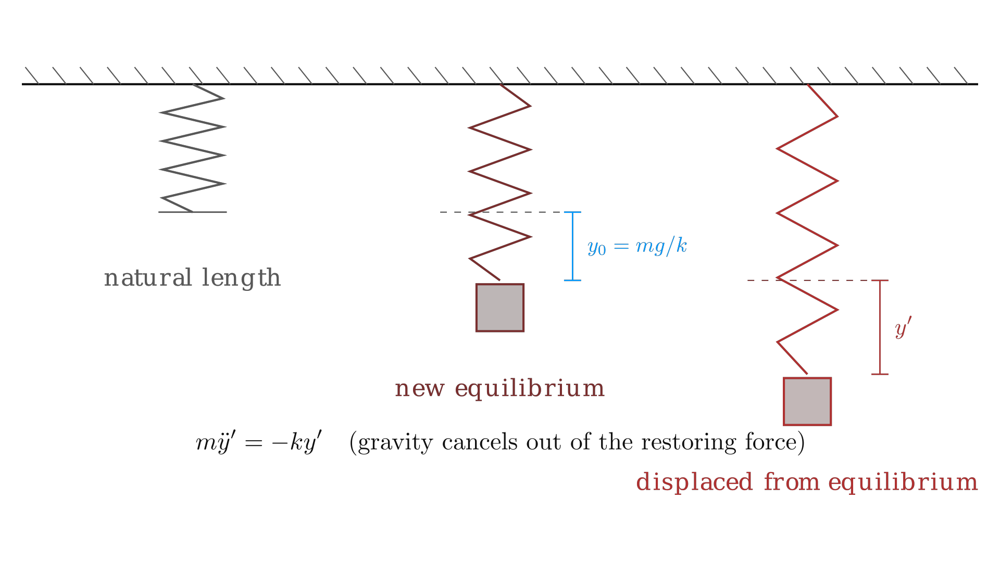
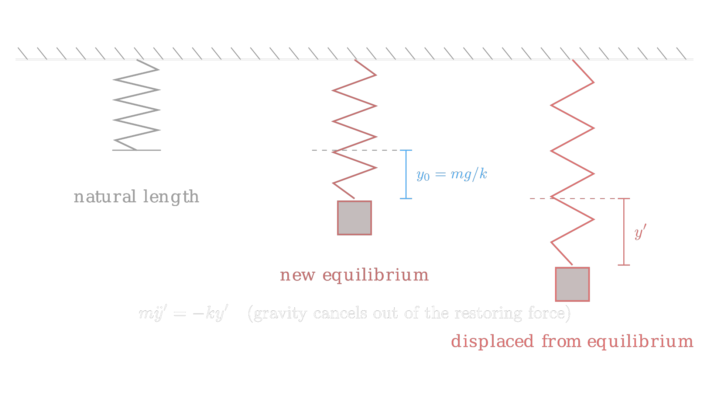
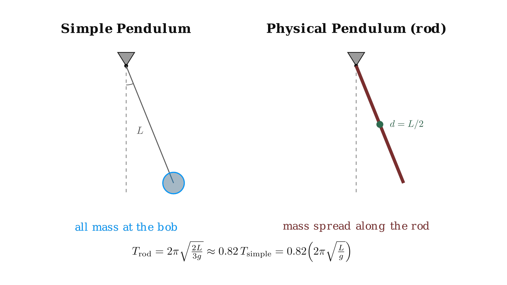
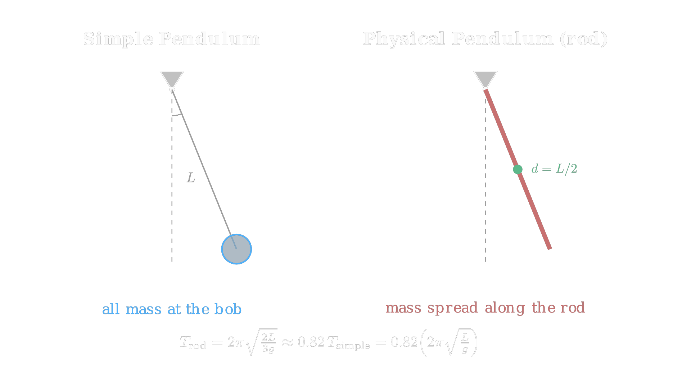
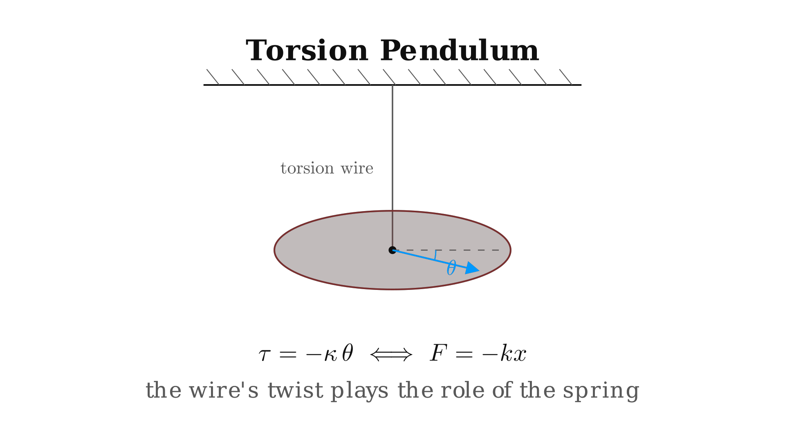
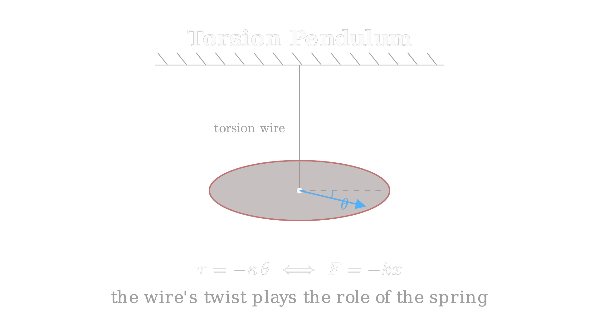

Unit 7: Oscillations第 7 单元：振动
From springs to pendulums, master simple harmonic motion with calculus-based methods: the SHM differential equation and its sinusoidal solution, periods derived from the equation of motion, and the energy of an oscillator.
从弹簧到单摆，用微积分方法掌握简谐运动（simple harmonic motion）：SHM 微分方程及其正弦解、由运动方程推导周期，以及振子的能量。
From springs to pendulums, master simple harmonic motion with algebra-based methods: the restoring-force condition, the period formulas, graphs of position, velocity and acceleration against time, and the exchange of kinetic and potential energy.
从弹簧到单摆，用以代数为基础的方法掌握简谐运动（simple harmonic motion）：回复力条件、周期公式、位置、速度与加速度随时间变化的图像，以及动能与势能之间的转换。
Defining Simple Harmonic Motion (SHM)简谐运动（SHM）的定义
- State the two conditions for SHM: a stable equilibrium and a net restoring force proportional to the displacement from it.
- Explain why the minus sign in $F = -kx$ means the force always points back toward equilibrium.
- Calculate the restoring force and the acceleration from $k$ (or an effective constant) and the displacement.
- Explain why a hanging spring still oscillates in SHM about its shifted equilibrium $y_0 = mg/k$.
- Distinguish SHM from periodic motion that is not SHM, such as a ball bouncing on the floor.
- Write Newton's second law as the differential equation $\frac{d^2x}{dt^2} = -\omega^2 x$ and identify $\omega^2$ from its coefficient.
- 陈述（
state）SHM 的两个条件：存在稳定平衡位置，且净回复力与相对该平衡的位移成正比。 - 解释 $F = -kx$ 中的负号为何意味着力始终指回平衡位置。
- 由 $k$（或等效常数）和位移计算回复力与加速度。
- 解释为什么悬挂弹簧仍然围绕下移后的平衡位置 $y_0 = mg/k$ 做 SHM。
- 区分 SHM 与不是 SHM 的周期运动，例如在地面上反弹的球。
- 把 Newton 第二定律写成微分方程 $\frac{d^2x}{dt^2} = -\omega^2 x$，并由其系数读出 $\omega^2$。
Simple harmonic motion is one of the most pervasive phenomena in physics. Whenever a system is disturbed slightly from a stable equilibrium, and the restoring force is proportional to the displacement, the resulting motion is sinusoidal: it repeats itself in a perfectly predictable pattern. SHM is a special case of periodic motion, one where the restoring force has a very specific mathematical form.
简谐运动（simple harmonic motion，SHM）是物理学中最常见的现象之一。只要系统从稳定平衡稍受扰动、且回复力（restoring force）与位移成正比，所得到的运动就是正弦型，以完全可预测的方式自我重复。SHM 是周期运动（periodic motion）的一种特例，其回复力具有极其特殊的数学形式。
The key idea is this: if you pull a mass on a spring a distance $x$ from equilibrium, the spring pulls it back with a force $F = -kx$. The negative sign means the force always opposes the displacement, pointing back toward equilibrium. This is the hallmark of SHM: a linear restoring force.
核心思想：把弹簧上的物体拉离平衡位置 $x$，弹簧以 $F = -kx$ 把它拉回。负号意味着力始终与位移反向、指向平衡。这正是 SHM 的标志：线性的回复力。
The Restoring Force回复力


A restoring force is any force directed opposite to the object's displacement from equilibrium. When you stretch a spring rightward, the spring pulls leftward. When you push a pendulum to the left, gravity's tangential component pulls it back to the right.
回复力是任何与位移方向相反、指向平衡位置的力。向右拉弹簧，弹簧向左拉物体；把单摆向左推，重力的切向分量将它向右拉回。
Restoring force is proportional to displacement and opposite in direction
回复力与位移成正比、方向相反
Dividing both sides by $m$ gives the acceleration at every position:
两边同除以 $m$，得到任意位置处的加速度：
The acceleration is proportional to the displacement and opposite to it; any system whose acceleration has this form undergoes SHM with $\omega = \sqrt{k/m}$.
加速度与位移成正比、方向相反；凡是加速度具有这种形式的系统都做 SHM，且 $\omega = \sqrt{k/m}$。
Writing the acceleration as the second derivative of position, $a = \frac{d^2x}{dt^2}$, turns Newton's second law into a differential equation:
把加速度写成位置对时间的二阶导数 $a = \frac{d^2x}{dt^2}$，Newton 第二定律就变成一个微分方程：
Any system whose equation of motion reduces to this form undergoes SHM; the coefficient of $x$ is $\omega^2$.
任何运动方程能化为这种形式的系统都做 SHM；$x$ 前的系数就是 $\omega^2$。
Worked Example: Is it SHM?例题：这是 SHM 吗？
A small puck of mass $m$ slides without friction back and forth inside a hemispherical bowl of radius $R$.
Is this SHM for small displacements?
质量为 $m$ 的小冰球在半径为 $R$ 的半球形碗内无摩擦地来回滑动。
小位移时是否为 SHM？
amplitude）处 $|F| = kA$ 达到最大，方向指回平衡。Worked Example: Applying the SHM Force Law例题：应用 SHM 力的规律
A $1.5\;\text{kg}$ cart on a low-friction track is connected to a spring. When displaced $0.08\;\text{m}$ from equilibrium, the net horizontal force on the cart is measured to be $0.96\;\text{N}$, directed back toward equilibrium.
$1.5\;\text{kg}$ 的小车通过弹簧连接在低摩擦导轨上。当小车偏离平衡位置 $0.08\;\text{m}$ 时，测得作用在小车上的水平合力大小为 $0.96\;\text{N}$，方向指回平衡位置。
When a question asks you to show that motion is simple harmonic, write the net force (or net torque) as a function of the displacement from equilibrium and show it has the form $F = -(\text{constant})\times(\text{displacement})$; name the constant and say that the force points toward equilibrium. "It goes back and forth" is not a justification. For a vertical spring, measure the displacement from the hanging equilibrium, not from the spring's natural length.
当题目要求证明（show）某运动是简谐运动时，把净力（或净力矩）写成相对平衡位置位移的函数，并说明它具有 $F = -(\text{constant})\times(\text{displacement})$ 的形式；写出这个常数，并说明力指向平衡位置。"它来回运动"不能作为理由。对竖直弹簧，位移要从悬挂后的平衡位置量起，而不是从弹簧的自然长度量起。
Once you have $F = -k_{\text{eff}}x$, write $m\frac{d^2x}{dt^2} = -k_{\text{eff}}x$ and read off $\omega^2 = k_{\text{eff}}/m$; that last line is the step that turns "it is SHM" into a period.
得到 $F = -k_{\text{eff}}x$ 后，写出 $m\frac{d^2x}{dt^2} = -k_{\text{eff}}x$，并读出 $\omega^2 = k_{\text{eff}}/m$；正是这最后一步把"它是 SHM"变成了周期。
1. Which of these is SHM? (a) a cart with net force $F = -5x$; (b) a cart with net force $F = -5x^3$; (c) a ball bouncing elastically on a floor.1. 下列哪一个是 SHM？(a) 净力为 $F = -5x$ 的小车；(b) 净力为 $F = -5x^3$ 的小车；(c) 在地面上做弹性反弹的球。
Only (a). Its restoring force is proportional to $x$ and opposite to it. In (b) the force points toward equilibrium but grows as $x^3$, not $x$, so it is periodic but not simple harmonic. In (c) the ball feels a constant force $mg$ in flight, which does not depend on its displacement, so it is periodic but not SHM.
只有 (a)。它的回复力与 $x$ 成正比且方向相反。(b) 中力虽然指向平衡位置，但按 $x^3$ 而不是 $x$ 增长，所以是周期运动但不是简谐运动。(c) 中球在空中受到恒定的 $mg$，与位移无关，所以也是周期运动而不是 SHM。
2. A $0.40\;\text{kg}$ block on a horizontal spring with $k = 160\;\text{N/m}$ is pulled $0.050\;\text{m}$ to the right of equilibrium. Find the force on the block and its acceleration at that instant.2. 水平弹簧（$k = 160\;\text{N/m}$）上 $0.40\;\text{kg}$ 的滑块被拉到平衡位置右侧 $0.050\;\text{m}$ 处。求此刻滑块受的力与加速度。
$F = -kx = -(160)(0.050) = -8.0\;\text{N}$, that is, $8.0\;\text{N}$ to the left. Then $a = F/m = -8.0/0.40 = -20\;\text{m/s}^2$, also toward equilibrium.
$F = -kx = -(160)(0.050) = -8.0\;\text{N}$，即向左 $8.0\;\text{N}$。于是 $a = F/m = -8.0/0.40 = -20\;\text{m/s}^2$，同样指向平衡位置。
3. A $0.50\;\text{kg}$ mass hangs from a spring with $k = 98\;\text{N/m}$ ($g = 9.8\;\text{m/s}^2$). How far below the spring's natural length is the equilibrium, and what is the net force when the mass is $0.030\;\text{m}$ below that equilibrium?3. $0.50\;\text{kg}$ 的物体挂在 $k = 98\;\text{N/m}$ 的弹簧下（$g = 9.8\;\text{m/s}^2$）。平衡位置在弹簧自然长度下方多远？物体位于该平衡位置下方 $0.030\;\text{m}$ 时，净力是多少？
$y_0 = mg/k = (0.50)(9.8)/98 = 0.050\;\text{m}$. At $0.030\;\text{m}$ below equilibrium the spring is stretched $0.080\;\text{m}$, so it pulls up with $(98)(0.080) = 7.84\;\text{N}$ while the weight is $4.9\;\text{N}$ down: net $2.94 \approx 2.9\;\text{N}$ upward. This equals $k\times(0.030\;\text{m})$, as SHM about the new equilibrium predicts.
$y_0 = mg/k = (0.50)(9.8)/98 = 0.050\;\text{m}$。物体在平衡位置下方 $0.030\;\text{m}$ 时，弹簧共伸长 $0.080\;\text{m}$，向上拉力为 $(98)(0.080) = 7.84\;\text{N}$，重力向下 $4.9\;\text{N}$：净力为向上 $2.94 \approx 2.9\;\text{N}$。它恰好等于 $k\times(0.030\;\text{m})$，与围绕新平衡位置做 SHM 的结论一致。
4. A $3.0\;\text{kg}$ object feels a net force $F = -12x$ (N, $x$ in m). Write its equation of motion as a differential equation and find $\omega$.4. $3.0\;\text{kg}$ 的物体受净力 $F = -12x$（N，$x$ 以 m 为单位）。把它的运动方程写成微分方程并求 $\omega$。 Physics C
$3.0\frac{d^2x}{dt^2} = -12x$, so $\frac{d^2x}{dt^2} = -4.0x$. The coefficient is $\omega^2 = 4.0\;\text{s}^{-2}$, so $\omega = 2.0\;\text{rad/s}$ and $T = 2\pi/\omega \approx 3.1\;\text{s}$.
$3.0\frac{d^2x}{dt^2} = -12x$，即 $\frac{d^2x}{dt^2} = -4.0x$。系数 $\omega^2 = 4.0\;\text{s}^{-2}$，所以 $\omega = 2.0\;\text{rad/s}$，$T = 2\pi/\omega \approx 3.1\;\text{s}$。
Frequency and Period of SHMSHM 的频率与周期
- Define period, frequency and angular frequency and convert between them with $T = 1/f$ and $\omega = 2\pi f$.
- Calculate the period of a mass-spring system with $T_s = 2\pi\sqrt{m/k}$ and of a simple pendulum with $T_p = 2\pi\sqrt{\ell/g}$.
- State that neither period depends on amplitude (and the pendulum's only for small angles), and that a pendulum's period does not depend on its mass.
- Predict how a period changes when $m$, $k$, $\ell$ or $g$ is scaled, using proportional reasoning.
- Determine $g$ or $k$ from measured periods.
- Derive the period of a spring system from its equation of motion by identifying $\omega^2$ in $\frac{d^2x}{dt^2} = -\omega^2 x$.
- 定义周期、频率与角频率，并用 $T = 1/f$ 和 $\omega = 2\pi f$ 相互换算。
- 用 $T_s = 2\pi\sqrt{m/k}$ 计算弹簧振子的周期，用 $T_p = 2\pi\sqrt{\ell/g}$ 计算单摆的周期。
- 陈述两种周期都与振幅无关（单摆仅在小角度下成立），且单摆周期与摆球质量无关。
- 用比例推理预测 $m$、$k$、$\ell$ 或 $g$ 按倍数改变时周期如何变化。
- 由测得的周期求出（
determine）$g$ 或 $k$。 - 由弹簧系统的运动方程推导周期：在 $\frac{d^2x}{dt^2} = -\omega^2 x$ 中识别出 $\omega^2$。
Every oscillating system has a natural rhythm: it takes a fixed amount of time to complete one full cycle. This time is the period $T$ (seconds). The frequency $f$ is cycles per second (Hz). Angular frequency $\omega$ is radians per second.
每个振动系统都有自身的节奏：完成一次完整循环所用的固定时间叫做周期（period）$T$，单位秒。频率（frequency）$f$ 是每秒循环次数，单位赫兹（Hz）。角频率（angular frequency）$\omega$ 单位为 rad/s。
$\omega = 2\pi f$
Mass–Spring System弹簧振子（弹簧-质量系统）
For a mass $m$ on an ideal spring of constant $k$, the period depends only on $m$ and $k$, not on amplitude.
对质量 $m$ 系于劲度系数（spring constant）$k$ 的理想弹簧上的振子，周期只由 $m$ 与 $k$ 决定，与振幅无关。
$\omega = \sqrt{k/m}$ · Independent of amplitude
$\omega = \sqrt{k/m}$ · 与振幅无关
Simple Pendulum单摆
Valid when $\theta_{\max} \lesssim 15°$ · Independent of mass and amplitude
在 $\theta_{\max} \lesssim 15°$ 时成立 · 与质量和振幅无关
isochronism）。
Worked Example: Ranking Periods例题：周期排序
Rank the periods (smallest to largest):
将下列三个振子的周期由小到大排序：
Worked Example: Measuring g with a Pendulum例题：用单摆测量 g
A student times a simple pendulum of length $0.800\;\text{m}$ swinging through small angles. It completes $20$ full oscillations in $36.0\;\text{s}$. Find the period, the frequency and the value of $g$ this measurement gives.
学生对一个长 $0.800\;\text{m}$、作小角度摆动的单摆计时，测得它完成 $20$ 次完整振动用时 $36.0\;\text{s}$。求周期、频率，以及由此测得的 $g$。
Worked Example: Period from the Equation of Motion (Two Springs)例题：由运动方程求周期（两根弹簧） Physics C
A $0.50\;\text{kg}$ block on a frictionless table is attached between two walls by two springs, $k_1 = 30\;\text{N/m}$ on the left and $k_2 = 20\;\text{N/m}$ on the right, both at their natural lengths when the block is at $x = 0$. Derive the period of the motion.
无摩擦桌面上 $0.50\;\text{kg}$ 的滑块通过两根弹簧连在两面墙之间：左侧 $k_1 = 30\;\text{N/m}$，右侧 $k_2 = 20\;\text{N/m}$，滑块位于 $x = 0$ 时两根弹簧都处于自然长度。推导其运动周期。
Check which quantity the question gives: "cycles per second" is $f$, "time for one cycle" is $T$, and "rad/s" is $\omega$. For "what happens if" questions, use the proportionality instead of numbers: $T \propto \sqrt{m}$ and $T \propto 1/\sqrt{k}$ for a spring, $T \propto \sqrt{\ell}$ and $T \propto 1/\sqrt{g}$ for a pendulum. In an experiment, plot $T^2$ against $\ell$ (or against $m$): the line is straight, with slope $4\pi^2/g$ (or $4\pi^2/k$).
先看清题目给出的是哪个量："每秒循环次数"是 $f$，"完成一次循环的时间"是 $T$，"rad/s"是 $\omega$。对"如果……会怎样"的题目，用比例关系而不是数值：弹簧有 $T \propto \sqrt{m}$、$T \propto 1/\sqrt{k}$；单摆有 $T \propto \sqrt{\ell}$、$T \propto 1/\sqrt{g}$。实验题中以 $T^2$ 对 $\ell$（或对 $m$）作图得到直线，斜率为 $4\pi^2/g$（或 $4\pi^2/k$）。
For an unfamiliar system, do not guess a period formula: write the equation of motion, rearrange it into $\frac{d^2x}{dt^2} = -(\ldots)x$, and state that the bracket is $\omega^2$.
遇到陌生系统时不要套用猜测的周期公式：写出运动方程，整理成 $\frac{d^2x}{dt^2} = -(\ldots)x$，并说明括号中的量就是 $\omega^2$。
1. A spring oscillator completes $30$ oscillations in $12\;\text{s}$. Find $T$, $f$ and $\omega$.1. 某弹簧振子在 $12\;\text{s}$ 内完成 $30$ 次振动。求 $T$、$f$ 和 $\omega$。
$T = 12/30 = 0.40\;\text{s}$, $f = 1/T = 2.5\;\text{Hz}$, and $\omega = 2\pi f = 5\pi \approx 15.7\;\text{rad/s}$.
$T = 12/30 = 0.40\;\text{s}$，$f = 1/T = 2.5\;\text{Hz}$，$\omega = 2\pi f = 5\pi \approx 15.7\;\text{rad/s}$。
2. A $0.25\;\text{kg}$ mass on a spring oscillates with period $0.50\;\text{s}$. Find the spring constant.2. 弹簧上 $0.25\;\text{kg}$ 的物体以 $0.50\;\text{s}$ 的周期振动。求劲度系数。
Square $T = 2\pi\sqrt{m/k}$ and solve: $k = \dfrac{4\pi^2 m}{T^2} = \dfrac{4\pi^2(0.25)}{(0.50)^2} = 4\pi^2 \approx 39\;\text{N/m}$.
把 $T = 2\pi\sqrt{m/k}$ 两边平方后求解：$k = \dfrac{4\pi^2 m}{T^2} = \dfrac{4\pi^2(0.25)}{(0.50)^2} = 4\pi^2 \approx 39\;\text{N/m}$。
3. A pendulum's length is made four times longer and it is taken to the Moon, where $g$ is about one sixth of Earth's. By what factor does its period change?3. 把单摆的摆长变为原来的 4 倍，并带到 $g$ 约为地球六分之一的月球上。其周期变为原来的多少倍？
$T \propto \sqrt{\ell/g}$, so the factor is $\sqrt{4 \times 6} = \sqrt{24} \approx 4.9$. The period becomes about $4.9$ times longer.
$T \propto \sqrt{\ell/g}$，所以倍数为 $\sqrt{4 \times 6} = \sqrt{24} \approx 4.9$。周期约变为原来的 $4.9$ 倍。
Representing and Analyzing SHMSHM 的表示与分析
- Identify the amplitude $A$, angular frequency $\omega$ and phase constant $\phi$ in $x(t) = A\cos(\omega t + \phi)$.
- Read $A$, $T$ and the starting position from an $x$-$t$ graph and write the matching $x(t)$.
- Calculate the maximum speed $v_{\max} = A\omega$ and the maximum acceleration $a_{\max} = A\omega^2$.
- Sketch the $v$-$t$ and $a$-$t$ graphs that match a given $x$-$t$ graph, and explain where $v$ and $a$ are zero or largest.
- Explain resonance: driving a system at its natural frequency makes the amplitude grow.
- Differentiate $x(t)$ to obtain $v(t)$ and $a(t)$, and verify that $x(t)$ satisfies $\frac{d^2x}{dt^2} = -\omega^2 x$.
- 在 $x(t) = A\cos(\omega t + \phi)$ 中识别振幅 $A$、角频率 $\omega$ 和初相 $\phi$。
- 从 $x$-$t$ 图像读出 $A$、$T$ 和起始位置，并写出对应的 $x(t)$。
- 计算最大速率 $v_{\max} = A\omega$ 与最大加速度 $a_{\max} = A\omega^2$。
- 画出（
sketch）与给定 $x$-$t$ 图像对应的 $v$-$t$ 与 $a$-$t$ 图像，并解释 $v$ 和 $a$ 在何处为零或最大。 - 解释共振：以系统的固有频率驱动时振幅会增大。
- 对 $x(t)$ 求导得到 $v(t)$ 与 $a(t)$，并验证 $x(t)$ 满足 $\frac{d^2x}{dt^2} = -\omega^2 x$。
The mathematical backbone of SHM is the sinusoidal function. If an object's position is described by a cosine or sine function of time, and its acceleration is proportional to the negative of its displacement, the motion is simple harmonic.
SHM 的数学骨架是正弦函数。若物体位置由时间的余弦或正弦函数描述，且加速度与位移成正比但方向相反，则运动为简谐运动。
Position as a Function of Time位置随时间的变化
$A$ = amplitude, $\omega$ = angular frequency, $\phi$ = phase constant
$A$ 为振幅，$\omega$ 为角频率，$\phi$ 为初相（phase constant）
You may be asked to verify that $x(t) = A\cos(\omega t + \phi)$ satisfies the SHM differential equation $\ddot{x} = -\omega^2 x$. Differentiate twice and compare.
The constants $A$ and $\phi$ are fixed by initial conditions: if the mass starts at $x_0$ with velocity $v_0$, then $A = \sqrt{x_0^2 + (v_0/\omega)^2}$ and $\tan\phi = -v_0/(\omega x_0)$. Released from rest at $x = A$ gives $\phi = 0$, the simplest case.
你可能会被要求验证（verify）$x(t) = A\cos(\omega t + \phi)$ 满足 SHM 微分方程 $\ddot{x} = -\omega^2 x$：求两次导数再比较即可。
常数 $A$ 和 $\phi$ 由初值条件确定：若初始位置 $x_0$、初速度 $v_0$，则 $A = \sqrt{x_0^2 + (v_0/\omega)^2}$，$\tan\phi = -v_0/(\omega x_0)$。在 $x = A$ 处静止释放得 $\phi = 0$，这是最简单的情形。
Velocity and Acceleration速度与加速度
Maximum speed: $v_{\max} = A\omega$
最大速率：$v_{\max} = A\omega$
Maximum acceleration: $a_{\max} = A\omega^2$
最大加速度：$a_{\max} = A\omega^2$
You can read these relationships straight off the graphs, without any formula: the velocity at any instant is the slope of the $x$-$t$ graph, so $v = 0$ wherever $x$ peaks and $|v|$ is largest where the $x$-$t$ graph crosses zero most steeply. The acceleration is the slope of the $v$-$t$ graph, and because $a = -\omega^2 x$ the $a$-$t$ graph is the $x$-$t$ graph flipped upside down.
不用任何公式，也能直接从图像读出这些关系：任一时刻的速度是 $x$-$t$ 图像的斜率，所以 $x$ 取峰值处 $v = 0$，$x$-$t$ 图像最陡地穿过零点处 $|v|$ 最大。加速度是 $v$-$t$ 图像的斜率；又因为 $a = -\omega^2 x$，$a$-$t$ 图像就是把 $x$-$t$ 图像上下翻转。
| Position位置 | Velocity速度 | Acceleration加速度 | Net Force合外力 |
|---|---|---|---|
| $x = +A$ (max right)$x = +A$（最右） | $v = 0$ | $a = -A\omega^2$ (max left)$a = -A\omega^2$（最大向左） | Max, toward eq.最大，指向平衡 |
| $x = 0$ (equilibrium)$x = 0$（平衡） | $|v| = A\omega$ (max)$|v| = A\omega$（最大） | $a = 0$ | Zero零 |
| $x = -A$ (max left)$x = -A$（最左） | $v = 0$ | $a = +A\omega^2$ (max right)$a = +A\omega^2$（最大向右） | Max, toward eq.最大，指向平衡 |
Resonance共振
When an oscillating system is driven at its natural frequency $f_0 = \omega_0/(2\pi)$, the amplitude grows dramatically. This is resonance. It is why a child on a swing is pushed "in rhythm," and why soldiers break step crossing a bridge.
当外加驱动频率与系统的固有频率（natural frequency）$f_0 = \omega_0/(2\pi)$ 相同时，振幅会迅速增大：这就是共振（resonance）。它解释了为什么孩子荡秋千时家长"踩着节奏"推、士兵过桥时要"便步"。
Worked Example: Kinematics of SHM例题：SHM 的运动学
A 0.50 kg block on a spring (k = 200 N/m) is pulled 0.10 m
from equilibrium and released from rest.
0.50 kg 的滑块系于弹簧（k = 200 N/m），
从平衡位置拉离 0.10 m 后静止释放。
Worked Example: Vertical Spring, Gravity Shifts Only the Equilibrium例题：竖直弹簧，重力只改变平衡位置 Physics C
A block of mass $m$ hangs from a vertical spring with constant $k$. Show that gravity shifts the equilibrium but does not change the oscillation frequency from the horizontal case.
质量 $m$ 的滑块系于劲度系数 $k$ 的竖直弹簧。证明重力只会改变平衡位置，不会改变相对水平情形的振动频率。
Principle: Newton's 2nd law for the spring-mass system; coordinate transformation to show SHM about new equilibrium
原理：对弹簧振子写 Newton 第二定律；坐标平移以显示绕新平衡位置的 SHM。
Let $y$ = displacement from the natural length (positive downward). The spring force is $-ky$ (upward) and gravity is $mg$ (downward).
取 $y$ 为相对弹簧自然长度的位移（向下为正）。弹簧力 $-ky$（向上），重力 $mg$（向下）：
Worked Example: Reading an x-t Graph例题：读 x-t 图像
An $x$-$t$ graph of a cart on a spring starts at its maximum, $x = +0.050\;\text{m}$, at $t = 0$, crosses $x = 0$ for the first time at $t = 0.25\;\text{s}$ and reaches $x = -0.050\;\text{m}$ at $t = 0.50\;\text{s}$. Write $x(t)$, and find the maximum speed and the maximum acceleration. What is the velocity at $t = 0.25\;\text{s}$?
弹簧上小车的 $x$-$t$ 图像在 $t = 0$ 时位于最大值 $x = +0.050\;\text{m}$，在 $t = 0.25\;\text{s}$ 时第一次经过 $x = 0$，在 $t = 0.50\;\text{s}$ 时到达 $x = -0.050\;\text{m}$。写出 $x(t)$，并求最大速率与最大加速度。$t = 0.25\;\text{s}$ 时速度是多少？
When you sketch $v$-$t$ or $a$-$t$ from an $x$-$t$ graph, line the graphs up on the same time axis and check three instants: at a peak of $x$, $v = 0$ and $a$ is at its extreme with the opposite sign; at a zero crossing of $x$, $a = 0$ and $|v|$ is largest. Label the peak values ($A$, $A\omega$, $A\omega^2$) with units. When you evaluate $x(t) = A\cos(\omega t)$, $\omega t$ is in radians, so set your calculator to radian mode.
由 $x$-$t$ 图像画 $v$-$t$ 或 $a$-$t$ 图像时，让各图共用同一时间轴，并检查三个时刻：在 $x$ 的峰值处，$v = 0$，$a$ 取符号相反的极值；在 $x$ 穿过零点处，$a = 0$，$|v|$ 最大。标出带单位的峰值（$A$、$A\omega$、$A\omega^2$）。计算 $x(t) = A\cos(\omega t)$ 时，$\omega t$ 的单位是弧度，计算器要设为弧度模式。
To "verify" or "show" that a given $x(t)$ is a solution, differentiate twice, substitute into the equation of motion, and state the condition that makes both sides equal (for example $\omega^2 = k/m$).
要"验证"或"证明"给定的 $x(t)$ 是解，求两次导数，代入运动方程，并写明使两边相等的条件（例如 $\omega^2 = k/m$）。
1. An oscillator has $x(t) = (0.20\;\text{m})\cos(5.0t)$. Find $A$, $\omega$, $T$, $v_{\max}$ and $a_{\max}$.1. 某振子 $x(t) = (0.20\;\text{m})\cos(5.0t)$。求 $A$、$\omega$、$T$、$v_{\max}$ 与 $a_{\max}$。
$A = 0.20\;\text{m}$ and $\omega = 5.0\;\text{rad/s}$, so $T = 2\pi/5.0 \approx 1.26\;\text{s}$. $v_{\max} = A\omega = 1.0\;\text{m/s}$ and $a_{\max} = A\omega^2 = (0.20)(25) = 5.0\;\text{m/s}^2$.
$A = 0.20\;\text{m}$，$\omega = 5.0\;\text{rad/s}$，所以 $T = 2\pi/5.0 \approx 1.26\;\text{s}$。$v_{\max} = A\omega = 1.0\;\text{m/s}$，$a_{\max} = A\omega^2 = (0.20)(25) = 5.0\;\text{m/s}^2$。
2. Where in the cycle is the speed largest, and where is the magnitude of the acceleration largest? Can both be zero at the same instant?2. 在一个周期中，哪里速率最大？哪里加速度大小最大？两者能否在同一时刻都为零？
The speed is largest at equilibrium ($x = 0$), where the net force and so the acceleration are zero. The acceleration is largest at the turning points ($x = \pm A$), where the velocity is zero. They can never both be zero: $a = 0$ only at $x = 0$, where the speed is at its maximum $A\omega$.
速率在平衡位置（$x = 0$）最大，此处净力为零，因此加速度为零。加速度大小在转折点（$x = \pm A$）最大，此处速度为零。两者永远不会同时为零：$a = 0$ 只发生在 $x = 0$，而那里速率正好取最大值 $A\omega$。
3. A block is released from rest at $x = +A$ at $t = 0$. Where is it, and which way is it moving, at $t = T/4$, $T/2$ and $3T/4$?3. 滑块在 $t = 0$ 时于 $x = +A$ 处由静止释放。在 $t = T/4$、$T/2$ 和 $3T/4$ 时，它在哪里、向哪个方向运动？
At $T/4$ it is at $x = 0$ moving in the $-x$ direction at maximum speed. At $T/2$ it is momentarily at rest at $x = -A$. At $3T/4$ it is back at $x = 0$, now moving in the $+x$ direction at maximum speed. Figure 7.1 shows the same pattern.
$T/4$ 时位于 $x = 0$，以最大速率沿 $-x$ 方向运动。$T/2$ 时在 $x = -A$ 处瞬时静止。$3T/4$ 时回到 $x = 0$，此时以最大速率沿 $+x$ 方向运动。图 7.1 显示的正是这一规律。
4. For $x(t) = (0.050\;\text{m})\cos(4.0t)$, use derivatives to find $v$ and $a$ at $t = 0.50\;\text{s}$.4. 对 $x(t) = (0.050\;\text{m})\cos(4.0t)$，用求导求 $t = 0.50\;\text{s}$ 时的 $v$ 与 $a$。 Physics C
$v = \frac{dx}{dt} = -(0.20)\sin(4.0t)$ and $a = \frac{dv}{dt} = -(0.80)\cos(4.0t)$. At $t = 0.50\;\text{s}$, $4.0t = 2.0\;\text{rad}$: $v = -(0.20)(0.909) \approx -0.18\;\text{m/s}$ and $a = -(0.80)(-0.416) \approx +0.33\;\text{m/s}^2$. Check: $x = (0.050)(-0.416) = -0.0208\;\text{m}$ and $-\omega^2 x = -(16)(-0.0208) \approx +0.33\;\text{m/s}^2$.
$v = \frac{dx}{dt} = -(0.20)\sin(4.0t)$，$a = \frac{dv}{dt} = -(0.80)\cos(4.0t)$。$t = 0.50\;\text{s}$ 时 $4.0t = 2.0\;\text{rad}$：$v = -(0.20)(0.909) \approx -0.18\;\text{m/s}$，$a = -(0.80)(-0.416) \approx +0.33\;\text{m/s}^2$。验算：$x = (0.050)(-0.416) = -0.0208\;\text{m}$，$-\omega^2 x = -(16)(-0.0208) \approx +0.33\;\text{m/s}^2$。
Energy of Simple Harmonic Oscillators简谐振子的能量
- Describe how energy moves between kinetic and potential forms during one cycle while the total stays constant (no friction).
- Calculate the total energy of a spring oscillator with $E = \tfrac{1}{2}kA^2 = \tfrac{1}{2}mv_{\max}^2$.
- Calculate the speed at any position from conservation of energy.
- Interpret graphs of $K$ and $U$ against position and energy bar charts at chosen points of the motion.
- Predict how the energy changes when the amplitude changes ($E \propto A^2$).
- Derive $U = \tfrac{1}{2}kx^2$ from the work done by the spring force and use $F = -dU/dx$; show from $x(t)$ and $v(t)$ that the total energy does not change with time.
- 描述一个周期中能量如何在动能与势能之间转换，而总能量保持不变（无摩擦）。
- 用 $E = \tfrac{1}{2}kA^2 = \tfrac{1}{2}mv_{\max}^2$ 计算弹簧振子的总能量。
- 由能量守恒计算任意位置处的速率。
- 解读 $K$、$U$ 随位置变化的图像，以及运动中选定位置的能量条形图。
- 预测振幅改变时能量如何变化（$E \propto A^2$）。
- 由弹簧力做的功推导 $U = \tfrac{1}{2}kx^2$ 并使用 $F = -dU/dx$；由 $x(t)$ 与 $v(t)$ 证明总能量不随时间变化。
Energy analysis provides a powerful alternative perspective on SHM. In an ideal SHM system (no friction), total mechanical energy is conserved: it sloshes back and forth between kinetic and potential forms.
能量方法为 SHM 提供了另一个强有力的视角。在理想 SHM 系统中（无摩擦），总机械能守恒：只是在动能与势能之间来回切换。
At maximum displacement ($x = \pm A$), all energy is potential:
在最大位移处（$x = \pm A$），能量全部为势能：
Depends on amplitude and spring constant, not on mass directly
只依赖振幅和劲度系数，与质量无关
Two different routes give the same answer, and each is a complete argument on its own.
Since $v_\text{max} = A\omega$, you can also write $E = \tfrac{1}{2}mv_\text{max}^2$: equating these two forms gives the useful identity $\omega = \sqrt{k/m}$ on exam problems where you're handed $v_\text{max}$ and $A$ but not $k$.
两种思路得到同样的答案，每一种本身都是完整的论证。
由于 $v_\text{max} = A\omega$，也可写成 $E = \tfrac{1}{2}mv_\text{max}^2$。两种形式联立可得 $\omega = \sqrt{k/m}$，对那些只给 $v_\text{max}$ 与 $A$、不给 $k$ 的题特别好用。
Energy vs. Position能量与位置
At any position $x$, speed can be found from conservation of energy:
在任意位置 $x$ 处，由能量守恒可求出速率：
| Position位置 | Kinetic Energy $K$动能 $K$ | Potential Energy $U$势能 $U$ |
|---|---|---|
| $x = \pm A$ | $0$ | $\frac{1}{2}kA^2$ (max)$\frac{1}{2}kA^2$（最大） |
| $x = 0$ | $\frac{1}{2}kA^2$ (max)$\frac{1}{2}kA^2$（最大） | $0$ |
| $x = \pm A/\sqrt{2}$ | $\frac{1}{4}kA^2$ | $\frac{1}{4}kA^2$ |
Worked Example: Speed at a Given Position例题：指定位置处的速率
A $2.0\;\text{kg}$ block oscillates on a spring with $k = 50\;\text{N/m}$ and amplitude $A = 0.40\;\text{m}$. Find the speed when $x = 0.20\;\text{m}$.
$2.0\;\text{kg}$ 的滑块系于 $k = 50\;\text{N/m}$ 的弹簧上振动，振幅 $A = 0.40\;\text{m}$。求 $x = 0.20\;\text{m}$ 处的速率。
Worked Example: Amplitude from the Speed at Equilibrium例题：由平衡位置的速率求振幅
A $0.50\;\text{kg}$ block on a horizontal spring with $k = 200\;\text{N/m}$ passes through equilibrium at $1.2\;\text{m/s}$. Find the amplitude and the speed when the block is $0.030\;\text{m}$ from equilibrium.
水平弹簧（$k = 200\;\text{N/m}$）上 $0.50\;\text{kg}$ 的滑块以 $1.2\;\text{m/s}$ 经过平衡位置。求振幅，以及滑块离平衡位置 $0.030\;\text{m}$ 时的速率。
Worked Example: Spring Energy from the Work Integral例题：由功的积分求弹簧势能 Physics C
For the spring of Figure 7.2 ($k = 50\;\text{N/m}$), derive $U(x)$ from the work done by the spring force, check that $F = -dU/dx$ returns Hooke's law, and show that $E = K + U$ is constant for $x(t) = A\cos(\omega t)$.
对图 7.2 中的弹簧（$k = 50\;\text{N/m}$），由弹簧力做的功推导 $U(x)$，验证 $F = -dU/dx$ 能还原 Hooke 定律，并证明对 $x(t) = A\cos(\omega t)$，$E = K + U$ 为常量。
Worked Example: Damped Oscillations例题：阻尼振动 Physics C
A $m = 2.0\;\text{kg}$ block on a spring with $k = 50\;\text{N/m}$ experiences linear damping with coefficient $b = 4.0\;\text{kg/s}$. Determine the type of damping and the oscillation frequency.
$m = 2.0\;\text{kg}$ 的滑块系于 $k = 50\;\text{N/m}$ 的弹簧，受线性阻尼（damping），阻尼系数 $b = 4.0\;\text{kg/s}$。判断阻尼类型并求振动频率。
Principle: the damped harmonic oscillator obeys $m\ddot{x} + b\dot{x} + kx = 0$, with three regimes set by the sign of $b^2 - 4mk$: underdamped ($b^2 < 4mk$), critically damped ($b^2 = 4mk$), or overdamped ($b^2 > 4mk$).
原理：阻尼简谐振子满足 $m\ddot{x} + b\dot{x} + kx = 0$，由 $b^2 - 4mk$ 的符号划分三种情形：欠阻尼（underdamped，$b^2 < 4mk$）、临界阻尼（critically damped，$b^2 = 4mk$）、过阻尼（overdamped，$b^2 > 4mk$）。
Compare $b^2$ to $4mk$:
比较 $b^2$ 与 $4mk$：
Since $b^2 = 16 \ll 400 = 4mk$, the motion is underdamped.
$b^2 = 16 \ll 400 = 4mk$，故为欠阻尼。
Key ideas: classify the regime from $b^2$ compared with $4mk$, and explain the shrinking amplitude by the damping force doing negative work on the oscillator, so the mechanical energy $\tfrac{1}{2}kA^2$ falls as $A$ falls. The exponential envelope is the quantitative version of that energy loss.
要点：比较 $b^2$ 与 $4mk$ 来判断阻尼类型；用阻尼力对振子做负功来解释振幅的减小：随着 $A$ 减小，机械能 $\tfrac{1}{2}kA^2$ 也减小。指数包络就是这种能量损失的定量描述。
For "find the speed at position $x$", go straight to energy: $\tfrac{1}{2}kA^2 = \tfrac{1}{2}mv^2 + \tfrac{1}{2}kx^2$, no time needed. In an energy bar chart, the total bar stays the same height at every position; only the split between $K$ and $U$ changes, with $U = 0$ at equilibrium and $K = 0$ at the turning points. For proportional questions, $E \propto A^2$: doubling the amplitude quadruples the energy and doubles $v_{\max}$, but leaves the period unchanged.
遇到"求位置 $x$ 处的速率"，直接用能量：$\tfrac{1}{2}kA^2 = \tfrac{1}{2}mv^2 + \tfrac{1}{2}kx^2$，不需要时间。能量条形图中，总能量条在每个位置都一样高，变化的只是 $K$ 与 $U$ 的分配：平衡位置 $U = 0$，转折点 $K = 0$。比例类问题记住 $E \propto A^2$：振幅加倍，能量变为 4 倍、$v_{\max}$ 加倍，但周期不变。
Given a potential-energy function or graph, $F = -dU/dx$: equilibrium is where the slope is zero, and it is stable (so small oscillations are SHM) where $U$ has a minimum.
给定势能函数或图像时，$F = -dU/dx$：斜率为零处是平衡位置；在 $U$ 取极小值处平衡是稳定的（因此小振动是 SHM）。
1. The amplitude of a spring oscillator is doubled. By what factor do the total energy, the maximum speed and the period change?1. 弹簧振子的振幅加倍。总能量、最大速率和周期分别变为原来的多少倍？
$E = \tfrac{1}{2}kA^2$ becomes $4$ times larger; $v_{\max} = A\omega$ doubles because $\omega = \sqrt{k/m}$ is unchanged; the period stays the same because it depends only on $m$ and $k$.
$E = \tfrac{1}{2}kA^2$ 变为 $4$ 倍；由于 $\omega = \sqrt{k/m}$ 不变，$v_{\max} = A\omega$ 加倍；周期只取决于 $m$ 和 $k$，所以不变。
2. A spring with $k = 80\;\text{N/m}$ oscillates with amplitude $0.10\;\text{m}$. Find the total energy, and $K$ and $U$ when $x = 0.050\;\text{m}$.2. $k = 80\;\text{N/m}$ 的弹簧以振幅 $0.10\;\text{m}$ 振动。求总能量，以及 $x = 0.050\;\text{m}$ 时的 $K$ 与 $U$。
$E = \tfrac{1}{2}(80)(0.10)^2 = 0.40\;\text{J}$. At $x = 0.050\;\text{m}$: $U = \tfrac{1}{2}(80)(0.050)^2 = 0.10\;\text{J}$ and $K = 0.40 - 0.10 = 0.30\;\text{J}$. At half the amplitude, $U$ is one quarter of $E$.
$E = \tfrac{1}{2}(80)(0.10)^2 = 0.40\;\text{J}$。$x = 0.050\;\text{m}$ 时：$U = \tfrac{1}{2}(80)(0.050)^2 = 0.10\;\text{J}$，$K = 0.40 - 0.10 = 0.30\;\text{J}$。在一半振幅处，$U$ 是 $E$ 的四分之一。
3. At what displacement, as a fraction of $A$, is the kinetic energy three times the potential energy?3. 位移为振幅 $A$ 的几分之几时，动能是势能的三倍？
$K = 3U$ means $E = 4U$, so $\tfrac{1}{2}kx^2 = \tfrac{1}{4}\cdot\tfrac{1}{2}kA^2$, giving $x^2 = A^2/4$ and $x = \pm A/2$.
$K = 3U$ 意味着 $E = 4U$，即 $\tfrac{1}{2}kx^2 = \tfrac{1}{4}\cdot\tfrac{1}{2}kA^2$，得 $x^2 = A^2/4$，$x = \pm A/2$。
4. A $1.0\;\text{kg}$ particle moves in the potential $U(x) = 2.0x^2$ (J, $x$ in m). Find the force and the angular frequency of small oscillations.4. $1.0\;\text{kg}$ 的质点在势能 $U(x) = 2.0x^2$（J，$x$ 以 m 为单位）中运动。求它受的力以及小振动的角频率。 Physics C
$F = -dU/dx = -4.0x$, so the effective spring constant is $k = 4.0\;\text{N/m}$ and $\omega = \sqrt{k/m} = \sqrt{4.0/1.0} = 2.0\;\text{rad/s}$.
$F = -dU/dx = -4.0x$，所以等效劲度系数 $k = 4.0\;\text{N/m}$，$\omega = \sqrt{k/m} = \sqrt{4.0/1.0} = 2.0\;\text{rad/s}$。
Simple and Physical Pendulums单摆与复摆
- Explain why a pendulum's restoring torque is proportional to $\theta$ only for small angles ($\sin\theta \approx \theta$, with $\theta$ in radians).
- Calculate the period of a simple pendulum with $T = 2\pi\sqrt{\ell/g}$ and explain why it does not depend on the mass of the bob.
- Calculate the period of a physical pendulum with $T = 2\pi\sqrt{I/(mgd)}$, using the rotational inertia about the pivot.
- Apply $\omega = \sqrt{\kappa/I}$ to a torsion pendulum by analogy with $\omega = \sqrt{k/m}$.
- Use a measured period to determine $g$, a length or a rotational inertia.
- Derive the period of a simple or physical pendulum from $\tau = I\frac{d^2\theta}{dt^2}$ with the small-angle approximation.
- 解释为什么只有在小角度下（$\sin\theta \approx \theta$，$\theta$ 以弧度为单位），摆的回复力矩才与 $\theta$ 成正比。
- 用 $T = 2\pi\sqrt{\ell/g}$ 计算单摆周期，并解释它为何与摆球质量无关。
- 用 $T = 2\pi\sqrt{I/(mgd)}$ 计算复摆周期，其中转动惯量取对支点的值。
- 类比 $\omega = \sqrt{k/m}$，把 $\omega = \sqrt{\kappa/I}$ 用于扭摆。
- 由测得的周期求出 $g$、长度或转动惯量。
- 利用小角度近似，由 $\tau = I\frac{d^2\theta}{dt^2}$ 推导单摆或复摆的周期。
Pendulums provide a second major class of SHM systems, connecting oscillatory motion to rotational dynamics. While a mass–spring system involves linear restoring forces, pendulums involve restoring torques.
摆是 SHM 的第二大类系统，把振动运动与转动动力学联系起来。弹簧振子涉及线性回复力，而摆涉及回复力矩。
The Simple Pendulum单摆
A simple pendulum (point mass $m$ on massless string of length $\ell$) at small angle $\theta$ has restoring torque $\tau = -mg\ell\sin\theta \approx -mg\ell\,\theta$. With $I = m\ell^2$, Newton's second law for rotation, $\tau = I\alpha$, gives $m\ell^2\alpha = -mg\ell\,\theta$:
单摆（simple pendulum）由长度 $\ell$ 的无质量绳系一质点 $m$ 构成。小角度 $\theta$ 下回复力矩为 $\tau = -mg\ell\sin\theta \approx -mg\ell\,\theta$。代入 $I = m\ell^2$，由转动的 Newton 第二定律 $\tau = I\alpha$ 得 $m\ell^2\alpha = -mg\ell\,\theta$：
This has the same form as $a = -\omega^2 x$ for a spring: the angular acceleration is proportional to the angle and opposite to it. So the motion is SHM with $\omega^2 = g/\ell$, which gives $T = 2\pi\sqrt{\ell/g}$. The mass cancels because both the restoring torque and the rotational inertia are proportional to $m$.
它与弹簧的 $a = -\omega^2 x$ 形式相同：角加速度与角度成正比、方向相反。所以运动是 SHM，$\omega^2 = g/\ell$，从而 $T = 2\pi\sqrt{\ell/g}$。质量被消去，因为回复力矩和转动惯量都与 $m$ 成正比。
Physics C Writing $\alpha = \frac{d^2\theta}{dt^2}$ gives the pendulum's differential equation, $\frac{d^2\theta}{dt^2} = -\frac{g}{\ell}\theta$, with solution $\theta(t) = \theta_{\max}\cos(\omega t + \phi)$ and $\omega = \sqrt{g/\ell}$.
Physics C 写出 $\alpha = \frac{d^2\theta}{dt^2}$，就得到单摆的微分方程 $\frac{d^2\theta}{dt^2} = -\frac{g}{\ell}\theta$，其解为 $\theta(t) = \theta_{\max}\cos(\omega t + \phi)$，$\omega = \sqrt{g/\ell}$。
The Physical Pendulum复摆（物理摆）


A physical pendulum is any rigid body oscillating about a fixed pivot, with center of mass at distance $d$ from the pivot:
复摆（physical pendulum）指任意绕固定支点摆动的刚体，质心距支点 $d$：
$d$ = distance from pivot to center of mass
$d$ = 支点到质心的距离
$I$ = moment of inertia about the pivot, $d$ = distance from pivot to CM
$I$ = 对支点的转动惯量；$d$ = 支点到质心距离
The Torsion Pendulum扭摆


torsion pendulum）Analogous to $ma = -kx$ for linear SHM; $\omega = \sqrt{\kappa/I}$
与线性 SHM 的 $ma = -kx$ 完全类比；$\omega = \sqrt{\kappa/I}$
Worked Example: Torsion Pendulum例题：扭摆
A balance wheel in a mechanical watch is a disk of rotational inertia $I = 4.0\times10^{-7}\;\text{kg}\cdot\text{m}^2$, mounted on a hairspring with torsion constant $\kappa = 1.6\times10^{-5}\;\text{N}\cdot\text{m/rad}$. Find the angular frequency and period of the wheel's oscillation.
机械手表中的摆轮是转动惯量 $I = 4.0\times10^{-7}\;\text{kg}\cdot\text{m}^2$ 的圆盘，装在扭转常数 $\kappa = 1.6\times10^{-5}\;\text{N}\cdot\text{m/rad}$ 的游丝上。求摆轮振动的角频率与周期。
Worked Example: Physical Pendulum Period例题：复摆周期
A uniform rod of mass M and length L is pivoted at one end.
Find the period of small oscillations.
质量 M、长度 L 的均匀杆以一端为支点。
求小角度振动的周期。
Worked Example: Designing a Seconds Pendulum例题：设计"秒摆"
A "seconds pendulum" is designed so each swing (half a period) takes exactly 1 s, i.e. $T = 2\;\text{s}$. Find the required length, taking $g = 9.8\;\text{m/s}^2$.
"秒摆"的设计使每次摆动（半个周期）恰好用时 1 s，即 $T = 2\;\text{s}$。求所需摆长，取 $g = 9.8\;\text{m/s}^2$。
Worked Example: Deriving the Period of a Uniform Rod Pendulum例题：推导均匀杆摆的周期 Physics C
A uniform thin rod of mass $M$ and length $L$ is pivoted about one end and swings as a pendulum for small angles. Derive the period and compare it to a simple pendulum of the same length.
质量 $M$、长度 $L$ 的均匀细杆以一端为支点作小角度摆动。推导其周期并与同长度的单摆作比较。
Principle: $\tau_{\text{net}} = I\alpha$ with small-angle approximation $\sin\theta \approx \theta$ to obtain SHM
原理：$\tau_{\text{net}} = I\alpha$ 加上小角度近似 $\sin\theta \approx \theta$ 即得 SHM。
Gravity acts at the center of mass, a distance $d = L/2$ from the pivot.
重力作用于质心，距支点 $d = L/2$。
Restoring torque: $\tau = -Mgd\sin\theta \approx -Mg(L/2)\theta$ for small $\theta$.
小角度下回复力矩：$\tau = -Mgd\sin\theta \approx -Mg(L/2)\theta$。
State the small-angle condition whenever you use $T = 2\pi\sqrt{\ell/g}$: it relies on $\sin\theta \approx \theta$ with $\theta$ in radians. Measure $\ell$ from the pivot to the center of the bob. For a physical pendulum, $I$ must be about the pivot (use the parallel-axis theorem, $I = I_{\text{cm}} + md^2$) and $d$ is the pivot-to-center-of-mass distance. In "what changes the period" questions, the bob's mass and the amplitude (when small) do not.
每次使用 $T = 2\pi\sqrt{\ell/g}$ 都要写明小角度条件：它依赖于 $\sin\theta \approx \theta$（$\theta$ 以弧度为单位）。$\ell$ 从支点量到摆球中心。复摆中 $I$ 必须是对支点的转动惯量（用平行轴定理 $I = I_{\text{cm}} + md^2$），$d$ 是支点到质心的距离。在"什么会改变周期"的题目中，摆球质量和（小）振幅都不会。
For a derivation, write $\tau = -mgd\sin\theta \approx -mgd\,\theta$, set it equal to $I\frac{d^2\theta}{dt^2}$, and identify $\omega^2 = mgd/I$; say where the small-angle approximation enters.
推导时写出 $\tau = -mgd\sin\theta \approx -mgd\,\theta$，令其等于 $I\frac{d^2\theta}{dt^2}$，识别出 $\omega^2 = mgd/I$；并指出在哪一步用了小角度近似。
1. A pendulum clock runs slow: its period is too long. Should the pendulum be lengthened or shortened, and why?1. 某摆钟走慢了：它的周期太长。应该把摆加长还是缩短？为什么？
Shortened. $T = 2\pi\sqrt{\ell/g}$ grows with $\ell$, so a shorter pendulum has a shorter period and the clock ticks faster. Changing the bob's mass would not help, because the period does not depend on it.
缩短。$T = 2\pi\sqrt{\ell/g}$ 随 $\ell$ 增大，摆越短周期越短，钟走得越快。改变摆球质量没有用，因为周期与质量无关。
2. A uniform rod $1.2\;\text{m}$ long swings about one end. Find its period for small oscillations ($g = 9.8\;\text{m/s}^2$).2. 长 $1.2\;\text{m}$ 的均匀杆绕一端摆动。求小振动的周期（$g = 9.8\;\text{m/s}^2$）。
$I = \tfrac{1}{3}ML^2$ and $d = L/2$, so $T = 2\pi\sqrt{\dfrac{2L}{3g}} = 2\pi\sqrt{\dfrac{2(1.2)}{3(9.8)}} = 2\pi\sqrt{0.0816} \approx 1.8\;\text{s}$. A simple pendulum of the same length would have $T \approx 2.2\;\text{s}$.
$I = \tfrac{1}{3}ML^2$，$d = L/2$，所以 $T = 2\pi\sqrt{\dfrac{2L}{3g}} = 2\pi\sqrt{\dfrac{2(1.2)}{3(9.8)}} = 2\pi\sqrt{0.0816} \approx 1.8\;\text{s}$。同样长度的单摆周期约为 $T \approx 2.2\;\text{s}$。
3. Why does the period of a simple pendulum not depend on the mass of the bob, while the period of a mass on a spring does?3. 为什么单摆的周期与摆球质量无关，而弹簧振子的周期却与质量有关？
For the pendulum the restoring force, $mg\sin\theta$, is itself proportional to $m$, so a heavier bob is pulled back harder in exact proportion to its greater inertia and $m$ cancels. A spring's restoring force $kx$ does not depend on $m$, so a larger mass accelerates less and the period grows as $\sqrt{m}$.
对单摆，回复力 $mg\sin\theta$ 本身与 $m$ 成正比，较重的摆球受到的回拉力正好按其更大的惯性等比例增大，于是 $m$ 被消去。弹簧的回复力 $kx$ 与 $m$ 无关，质量越大加速度越小，周期按 $\sqrt{m}$ 增大。
4. A thin hoop of radius $R = 0.25\;\text{m}$ hangs on a nail at its rim. Write its equation of motion for small angles and find the period.4. 半径 $R = 0.25\;\text{m}$ 的细圆环挂在其边缘的钉子上。写出小角度下的运动方程并求周期。 Physics C
About the nail, $I = MR^2 + MR^2 = 2MR^2$ (parallel-axis theorem) and $d = R$. Then $2MR^2\frac{d^2\theta}{dt^2} = -MgR\,\theta$, so $\omega^2 = \dfrac{g}{2R}$ and $T = 2\pi\sqrt{\dfrac{2R}{g}} = 2\pi\sqrt{\dfrac{0.50}{9.8}} \approx 1.4\;\text{s}$.
对钉子，$I = MR^2 + MR^2 = 2MR^2$（平行轴定理），$d = R$。于是 $2MR^2\frac{d^2\theta}{dt^2} = -MgR\,\theta$，得 $\omega^2 = \dfrac{g}{2R}$，$T = 2\pi\sqrt{\dfrac{2R}{g}} = 2\pi\sqrt{\dfrac{0.50}{9.8}} \approx 1.4\;\text{s}$。
Spring Period:弹簧周期： $T_s = 2\pi\sqrt{m/k}$
Simple Pendulum:单摆： $T_p = 2\pi\sqrt{\ell/g}$
Physical Pendulum:复摆： $T = 2\pi\sqrt{I/(mgd)}$
SHM Acceleration:SHM 加速度： $a = -\omega^2 x$
SHM Diff. Eq.:SHM 微分方程： $\ddot{x} = -\omega^2 x$ Physics C
Position:位置： $x = A\cos(\omega t + \phi)$
Velocity:速度： $v = -A\omega\sin(\omega t + \phi)$
Max Speed:最大速率： $v_{\max} = A\omega$
Total Energy:总能量： $E = \frac{1}{2}kA^2$
Preparing Unit 7 for the AP Exam为 AP 考试准备第 7 单元
AP Physics C: Mechanics, from May 2027: Section I has 42 multiple-choice questions in 85 minutes (50% of the score) and Section II has 4 free-response questions in 95 minutes (50% of the score). Unit 7 is 10-15% of the multiple-choice section.
AP Physics C: Mechanics（自 2027 年 5 月起）：第一部分为 42 道选择题，用时 85 分钟（占总分 50%）；第二部分为 4 道自由作答题，用时 95 分钟（占总分 50%）。第 7 单元占选择题部分的 10-15%。
AP Physics 1, from May 2027: Section I has 42 multiple-choice questions in 85 minutes (50% of the score) and Section II has 4 free-response questions in 95 minutes (50% of the score). Unit 7 is 5-8% of the multiple-choice section.
AP Physics 1（自 2027 年 5 月起）：第一部分为 42 道选择题，用时 85 分钟（占总分 50%）；第二部分为 4 道自由作答题，用时 95 分钟（占总分 50%）。第 7 单元占选择题部分的 5-8%。
Multiple Choice）Ranking periods: given different $m$, $k$ or $\ell$ values, rank systems by period. $T$ depends on $m$ and $k$ (spring) or $\ell$ and $g$ (pendulum), never on the amplitude of an ideal oscillator.
周期排序：给出不同 $m$、$k$、$\ell$ 时按周期排序。$T$ 取决于 $m$ 与 $k$（弹簧）或 $\ell$ 与 $g$（单摆），理想振子的周期从不取决于振幅。
Energy: $E \propto A^2$. Doubling the amplitude quadruples the energy.
能量：$E \propto A^2$，振幅加倍，能量变为 4 倍。
Graphs: match $x$-$t$, $v$-$t$ and $a$-$t$ graphs using the phase relationships in Figure 7.1.
图像：利用图 7.1 中的相位关系，把 $x$-$t$、$v$-$t$ 与 $a$-$t$ 图像对应起来。
Free Response）Section II has one question of each type: mathematical routines; translation between representations; experimental design and analysis; qualitative/quantitative translation.
第二部分四种题型各一道：数学过程（mathematical routines）；不同表征之间的转换（translation between representations）；实验设计与分析（experimental design and analysis）；定性与定量之间的转换（qualitative/quantitative translation）。
Mathematical routines Physics C Practise deriving periods from Newton's second law: write $F = ma$ (or $\tau = I\alpha$), substitute the restoring force or torque, rearrange into $\frac{d^2x}{dt^2} = -\omega^2 x$, and read off $\omega$.
数学过程 Physics C 练习由 Newton 第二定律推导周期：写出 $F = ma$（或 $\tau = I\alpha$），代入回复力或回复力矩，整理成 $\frac{d^2x}{dt^2} = -\omega^2 x$，再读出 $\omega$。
Mathematical routines: practise writing the period formula or the energy equation in symbols first, then substituting numbers with units, so the method is visible and not only the result.
数学过程：练习先写出符号形式的周期公式或能量方程，再代入带单位的数字，让方法本身可见，而不只是结果。
Translation between representations: draw free-body diagrams at different positions, energy bar charts, and matching $x(t)$, $v(t)$ and $a(t)$ graphs.
不同表征之间的转换：在不同位置画受力图、绘制能量条形图，并画出相互对应的 $x(t)$、$v(t)$、$a(t)$ 图像。
Experimental design and analysis: measure $g$ with a pendulum or $k$ with a spring. Linearize: $T^2$ against $\ell$ (or against $m$) gives a straight line whose slope gives the unknown.
实验设计与分析：用单摆测 $g$ 或用弹簧测 $k$。线性化处理：以 $T^2$ 对 $\ell$（或对 $m$）作图得到直线，由斜率求出未知量。
- Confusing period with frequency: they are reciprocals.
- Thinking amplitude affects period: it does not for ideal SHM.
- Forgetting the small-angle condition for pendulums.
- Mixing up $v_{\max} = A\omega$ and $a_{\max} = A\omega^2$.
- Energy: $E \propto A^2$, not $A$. Doubling the amplitude quadruples the energy.
- Using the wrong $I$ for a physical pendulum: it must be about the pivot, not the center of mass.
- Sign errors in the restoring force: without the minus sign the "force" pushes the object away from equilibrium and there is no oscillation.
- 把周期与频率混为一谈：两者互为倒数。
- 以为振幅影响周期：理想 SHM 中不影响。
- 忘了单摆的小角度条件。
- 把 $v_{\max} = A\omega$ 与 $a_{\max} = A\omega^2$ 搞混。
- 能量 $E \propto A^2$ 而非 $A$，振幅加倍，能量变为 4 倍。
- 复摆用错 $I$：必须是对支点的转动惯量，不是对质心的。
- 回复力符号错：漏掉负号，"力"就会把物体推离平衡位置，也就不会振动。
Flashcards: Click to Flip闪卡：点击翻面
$F = -kx$ or $\tau = -\kappa\theta$回复力与位移成正比：
$F = -kx$ 或 $\tau = -\kappa\theta$
Unit 7: Practice Quiz第 7 单元：练习测验
鼎睿学苑 · Dingrui Scholars
AP Physics C: Mechanics · Unit 7: Oscillations · 2026 EditionAP Physics C: Mechanics · 第 7 单元：振动 · 2026 版
AP Physics 1 · Unit 7: Oscillations · 2026 EditionAP Physics 1 · 第 7 单元：振动 · 2026 版